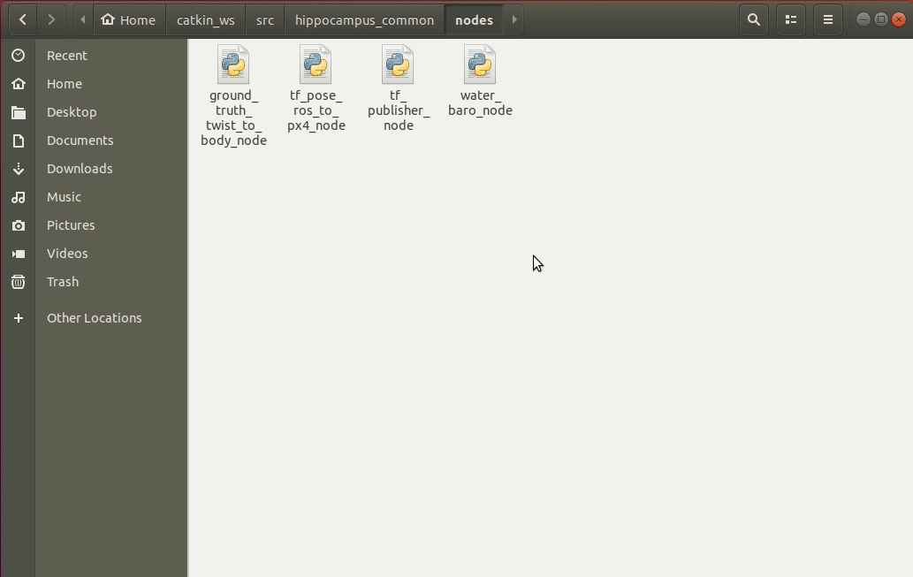

ROS Package
In this section you will:
create a new ros package
write a node in
pythonrun a node via
ros2 runuse the tools
ros2 node infoandros2 topic echo
Attention
The following tutorial is not meant as a step-by-step solution for the first assignment. These are just toy examples to demonstrate how to use ROS and interact with the simulated BlueROV in an easy to follow manner. Therefore, we do not claim that these code snippets are complete and we use some funny names at times. Please do not copy-paste them.
Create A Package
If you have completed all the installation instructions in Install ROS, you have already created a Catkin workspace at ~/fav/catkin_ws. The workspace contains several directories:
~/fav/ros2
├── build
├── install
├── log
└── src
Probably the only one you will be working with is the src directory. This is the place where the so called packages are.
For our code directories to be recognized as packages, two files are required:
package.xmlCMakeLists.txt
Otherwise a package is nothing but a normal directory containing arbitrary files and subdirectories.
Packages can also be in arbitrary subdirectories, since the build system will look for directories containing a package.xml recursively to identify packages.
An example for this is the hippo_core repository you cloned during the setup instructions.
The hippo_core directory itself is not a package, but contains packages as subdirectories like hippo_common or hippo_msgs.
For this guide it is not necessary to go into details too much. But if you like to know more about packages, you can read the article about packages in the ROS Docs.
Hint
In ROS2 there is the option to create native Python packages. For this class, we stick to the CMake way of organizing packages. Even if we write pure Python packages. So in this regard our instructions differ from the official documentation.
Go to the src directory
cd ~/fav/ros2/src
and create the package directory
mkdir awesome_package
Remember, we need at least package.xml and CMakeLists.txt.
Almost minimal examples are presented in the following.
Take a look at the highlighted lines.
Replace the project’s name with your own package name.
1cmake_minimum_required(VERSION 3.5)
2project(awesome_package)
3find_package(ament_cmake REQUIRED)
4find_package(ament_cmake_python REQUIRED)
5find_package(rclpy REQUIRED)
6
7install(PROGRAMS
8 DESTINATION lib/${PROJECT_NAME}
9)
10
11ament_package()
1<?xml version="1.0"?>
2<?xml-model href="http://download.ros.org/schema/package_format3.xsd" schematypens="http://www.w3.org/2001/XMLSchema"?>
3<package format="3">
4 <name>awesome_package</name>
5 <version>0.0.0</version>
6 <description>Our super awesome package</description>
7
8 <maintainer email="someones.mail.address@tuhh.de">Someones name</maintainer>
9
10 <!-- One license tag required, multiple allowed, one license per tag -->
11 <!-- Commonly used license strings: -->
12 <!-- BSD, MIT, Boost Software License, GPLv2, GPLv3, LGPLv2.1, LGPLv3 -->
13 <license>GPLv2</license>
14
15 <url type="website">hippocampusrobotics.github.io/docs</url>
16
17 <author email="someones.mail@tuhh.de">Someones name</author>
18
19 <buildtool_depend>ament_cmake</buildtool_depend>
20 <buildtool_depend>ament_cmake_python</buildtool_depend>
21
22 <depend>rclpy</depend>
23
24 <!-- The export tag contains other, unspecified, tags -->
25 <export>
26 <build_type>ament_cmake</build_type>
27 </export>
28</package>
That’s it. You have just created your first catkin package. Your package structure should look similar to:
~/fav/ros2/src
└── awesome_package
├── CMakeLists.txt
└── package.xml
We can now build our workspace
build_ros
and source the newly created package.
. ~/.bashrc
This only needs to be done once a new package is created.
Nothing bad happens if we are a bit overly cautios regarding sourcing our .bashrc.
But it does nothing good either.
So we might want to save it up for the cases where it is actually required.
If the commands mentioned above completed without errors, we can check if our newly created is detected correctly. The following command should give as the installation path of our package.
ros2 pkg prefix awesome_package
In case things did not work out as expected, we might get Package not found as response.
This indicates that we (most likely) messed something up while following the instructions above.
Double check everything and if this does not fix the problem ask your favorite research associate.
Write A Node
In general, you have the choice to write nodes either in Python or in C++. For the sake of simplicity we recommend Python. If you haven’t already worked with one of these languages, in some regards Python might feel similiar to Matlab.
Before we can write a node, we create a nodes/ directory to keep things neat and clean.
It is not strictly required (ROS will find your node as long as it is in your package, no matter in which subdirectory it is), but it complies with conventions.
Right click awesome_package and choose New Folder and name it nodes. Right click nodes and choose New File. Name it setpoint_publisher.py. It should open automatically.
We have to make the Python file executable. To do so, enter the following command in your terminal (for example the integrated one in VS Code):
chmod +x ~/fav/ros2/src/awesome_package/nodes/setpoint_publisher.py
Hint
Just in case the integrated terminal is not open: You can open it with Ctrl + Shift + `.
The general syntax is chmod +x PATH_TO_THE_FILE.
If you feel more comfortable with the graphical interface, you can also set the executable flag in the file browser by right clicking it and open its properties:
Note
Each time you create a new node, make sure you have made it executable.
The first line of your node needs to be:
1#!/usr/bin/env python3
so your system knows your file should be executed as a Python file.
Your first node could look like:
Todo
Replace this snippet with correct ros2 code
1#!/usr/bin/env python3
2from rclpy.node import Node # import the node class from the ros client library
3import math # needed to use the trigonometric functions sin and cos
4from hippo_msgs.msg import ActuatorControls # this is a ROS message class
5
6
7class MyFirstNode(Node):
8 def __init__(self):
9 super().__init__(node_name='setpoint_publisher')
10 self.setpoint_pub = self.create_publisher(ActuatorControl, 'thruster_controls', 1)
11
12 def run(self):
13 rate = rospy.Rate(30.0)
14
15 while not rospy.is_shutdown():
16 msg = ThrusterSetpoint()
17 msg.header.stamp = rospy.Time.now()
18 # since the bluerov has 8 thrusters, the setpoint list holds 8 values
19 t = rospy.get_time()
20 msg.data[0] = 0.2 * math.sin(t)
21 msg.data[1] = -0.2 * math.sin(t)
22 msg.data[2] = 0.2 * math.cos(t)
23 msg.data[3] = -0.2 * math.cos(t)
24 msg.data[4] = 0.4 * math.sin(t)
25 msg.data[5] = -0.4 * math.sin(t)
26 msg.data[6] = 0.4 * math.cos(t)
27 msg.data[7] = -0.4 * math.cos(t)
28
29 self.setpoint_pub.publish(msg)
30
31 rate.sleep()
32
33
34def main():
35 node = MyFirstNode()
36 node.run()
37
38
39if __name__ == "__main__":
40 main()
Run A Node
Attention
For each node we have to modify the CMakeLists.txt of the corresponding package. Add the node’s path relative to the package’s root to the install() call.
For our first node we add the highlighted line to the CMakeLists.txt.
install(PROGRAMS
nodes/setpoint_publisher.py
DESTINATION lib/${PROJECT_NAME}
)
Every time you modify the CMakeLists.txt rebuild your workspace with catkin build and to be super save you might also want to resource your workspace setup with . ~/.bashrc.
If you want to run a Python program, normally you would use a command like python3 /path/to/your/file/python_file.py.
This would work for our node, too.
But instead of running our node by entering python ~/fav/ros2/src/awesome_package/nodes/setpoint_publisher.py, where we have to explicitly tell Python where it can find our file setpoint_publisher.py, we can use ros2 run. One of the advantages of ros2 run is that we do not have to know where the program/node is that we want to run.
The command finds the source file on its own.
The general usage of the ros2 run command is ros2 run <package_name> <executable_name>. So for our awesome_package and its setpoint_publisher.py it would be:
ros2 run awesome_package setpoint_publisher.py
If you try to do so right now, you will likely get an error message No executable found.
We created a package, but we haven’t built our workspace since we modified CMakeLists.txt (remember, that we are supposed to rebuild our workspace each time we modify this file?).
build_ros
Note
Every time we create a new package, or create a new node in an existing package, we need to build our Catkin workspace with build_ros and apply the updated package paths with . ~/.bashrc.
Now, we should be ready to finally run our code
ros2 run awesome_package setpoint_publisher.py
Hint
You can use Tab to use the shell’s ability to auto-complete your commands. If the auto-completion is unambigous, a single hit will suffice. If there is more than one auto-complete option, hit Tab twice to show the different options.
Hint
Just to remind you: you stop running programs in a terminal by the shortcut Ctrl + C.
In the node’s source code you can see that the sent thruster setpoints are sin and cos signals.
We have started the setpoint_publisher.py node but since it just publishes ROS messages, we can’t see any output in the terminals.
We can use command line tools ros2 node and ros2 topic to get some insights on what is going on in the background hidden from our curious eyes.
With ros2 node info /name/of/our/node we can get various information on our node. For example what publications and what subscriptions it has.
Or in other words: what are the topics the node wants to receive data on and what are the topics it ouputs data on.
Hint
Again, we can use Tab to auto-complete the node name after we have started writing the first few characters. Start using this feature if you haven’t already!
Todo
Continue to change stuff for ROS2 from here on!
We see the publications /rosout and /thruster_setpoint. Every node publishes to /rosout for logging, so we are not interested in it for now. But the node publishes /thruster_setpoint with the message type fav_msgs/ThrusterSetpoint because we told it to do so. Rember these lines from the setpoint_publisher.py?
9 rospy.init_node("setpoint_publisher")
10 self.setpoint_pub = rospy.Publisher("thruster_setpoint",
11 ThrusterSetpoint,
12 queue_size=1)
Line 9 tells ROS to create a node with the name "setpoint_publisher" and in line 10 we create a publisher with the topic name "thruster_setpoint" and the message type ThrusterSetpoint.
To see what messages the node is actually publishing, we use rostopic echo /the/topic/name/to/echo.
Note
I added -n 1 at the end of the command to echo only a single message. If you omit this argument, rostopic echo will continue to print messages until you stop it with Ctrl + C.
These two commands are great to get at least some insights on what is going on during the execution of our node. But most of us will find it rather cumbersome to evaluate the echoed data in realtime. I mean, would you claim to be able to see that the echoed data is actually the output of a sine function? So some proper plotting tool might come in handy here.
We can use rqt_multiplot to visualize the data. The following screenshot shows the thruster setpoints for the first two motors.
General information to rqt_multiplot can be found in the ROS Wiki and some step-by-step instructions in the section RQt Multiplot.